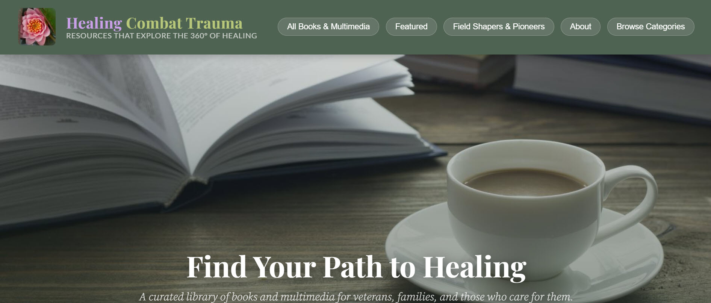
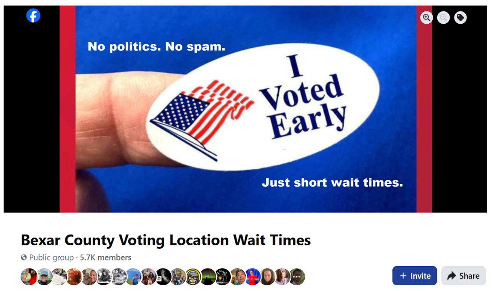
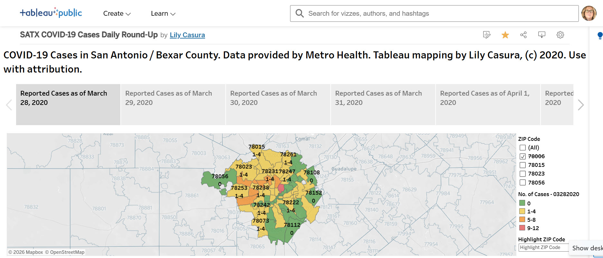
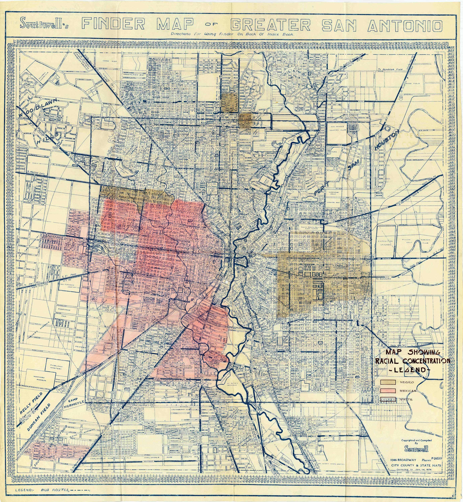
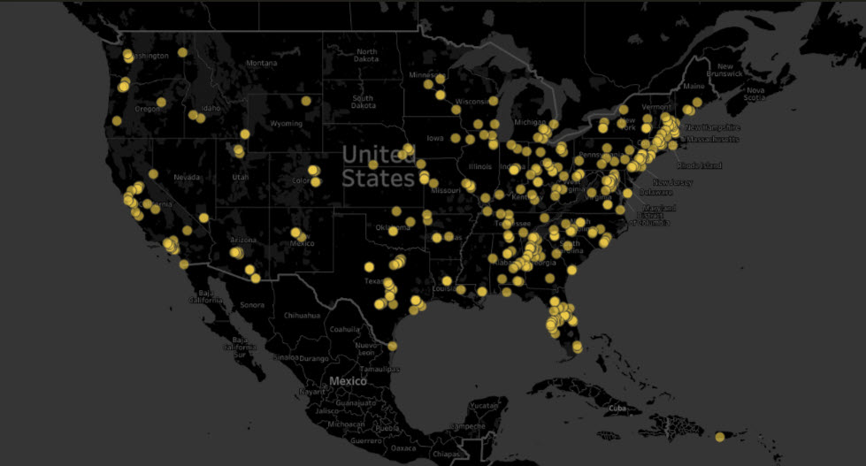

Bexar County Adult Women Living in Poverty by ZIP Code
An interactive Tableau visualization mapping the estimated number and percentage of adult women living in poverty across Bexar County ZIP codes — making neighborhood-level inequality visible.
View interactive visualization →
First website on combat veterans and PTSD · 1,000+ articles over multiple years · Recently completely reimagined
Founded in 2005 — the first website to address the issue of combat veterans and post-traumatic stress disorder. Over the years it grew to more than 1,000 articles, becoming a substantive resource for veterans, families, and the clinicians and therapists who serve them.
Recently reconceptualized and completely rebuilt as a "journey" experience — structured around the lived experience of veterans, those they love, and the professionals who support them. A chapter about the site, its vision, and its impact was published in Healing War Trauma: A Handbook of Creative Approaches (Routledge, 2013).

healingcombattrauma.com — recently reimagined
Women Veterans Housing Directory
State-by-state resource directory · Active since 2015
A state-by-state directory of housing resources for women veterans who are precariously housed or anticipating homelessness — built as part of the IWMF-funded multimedia reporting project and maintained since. Part of a body of work that has generated 50,000+ published words and research that inspired a character on a popular crime drama.

Bexar County Voting Location Wait Times
Public Facebook group · 5.7K members
Created in October 2020 to crowdsource voting location wait times during San Antonio's lengthy early voting period — when no official tracker existed. "No politics. No spam. Just short wait times." Covered by KENS-5, Telemundo, and the San Antonio Express-News. Revived for the 2024 election cycle.

Bexar County Voting Location Wait Times — 5.7K members, 2020
SATX COVID-19 Daily Round-Up
Beginning in March 2020 — when COVID-19 was first registering with municipalities across the U.S. — produced a daily ZIP code map of COVID-19 cases in San Antonio and Bexar County, shared on a personal Facebook page that was read heavily and relied upon by residents trying to assess their own risk. Data pulled nightly from Metro Health, mapped in Tableau, and posted with plain-language commentary.
For months, this was ahead of the official response — before the mayor and county judge began their own nightly briefings. Once competent, well-resourced coverage was established, the daily posts stopped. The gap had been filled.

SATX COVID-19 Cases Daily Round-Up · Data from Metro Health · Tableau mapping by Lily Casura · March 2020
Bexar County Crisis Recovery
Public Facebook group · Crisis resource hub
Created in the aftermath of the February 2021 snow and ice emergency (locally known as "SNOVID") to curate and vet resources for San Antonio and Bexar County residents. Built from scratch during the crisis and maintained through recovery.

Bexar Crisis Recovery — membership was significantly larger at peak
A site created to house the numerous articles written on poverty locally and nationally — making a sustained body of journalism on one of San Antonio's most persistent challenges findable and accessible in one place.

Southwell's 1934 Finder Map of Greater San Antonio, showing racial concentration — historical context for understanding present-day poverty patterns
Community Needs Assessment — Made Accessible
300+ page report · Tableau visualizations · Partner resources · City of San Antonio
The 2018 Community Needs Assessment was conducted under the auspices of the City of San Antonio's Community Services Block Grant — a survey conducted every five years or so to understand the needs of low-income residents. The report itself was 300+ pages — but the project didn't stop there. The findings were translated into Tableau visualizations, a partner excerpt for nonprofits and agencies, and online resources, all to maximize reach and usability beyond the report itself.

Key informants interviewed across San Antonio and Bexar County

Results made available online in multiple formats including Tableau
Pilot Survey on Women Veterans and Homelessness
An early national survey of women veterans on housing instability and homelessness — the precursor to the IRB-approved research that followed. The concept and its potential earned an inaugural IWMF Howard G. Buffett grant to pursue multimedia reporting on female veteran homelessness, including in-person interviews with women veterans across the country and the creation of interactive websites to house and present the findings.
Commentary from 400 survey respondents was mapped interactively on Tableau — with their locations scrambled to protect their identities — allowing their voices to be heard without compromising their privacy.
View interactive map on Tableau Public →
Survey respondents mapped across the U.S. — locations scrambled to protect identities